Asheville Morris of Asheville, North Carolina performs Morris dances from the southwestern regions of England. We practice during the autumn months and present public displays of Welsh Border Morris dances during the year-end holiday season. Our winter practice sessions focus on Cotswold Morris dances performed in public from May Day through the summer.
Our group is open to men or women as dancers and musicians. All dances are taught. Music instruction provided to experienced musicians. Interest in traditional music and singing is welcomed.
We meet every Tuesday to practice or perform.
We perform solo and often tour with other Morris groups in the Asheville area and the Morris teams at the John C. Campbell Folk School. We also have opportunities to perform with other dance groups in the US and abroad.
To contact us: juiceofbarley@hotmail.com 828-545-5510

 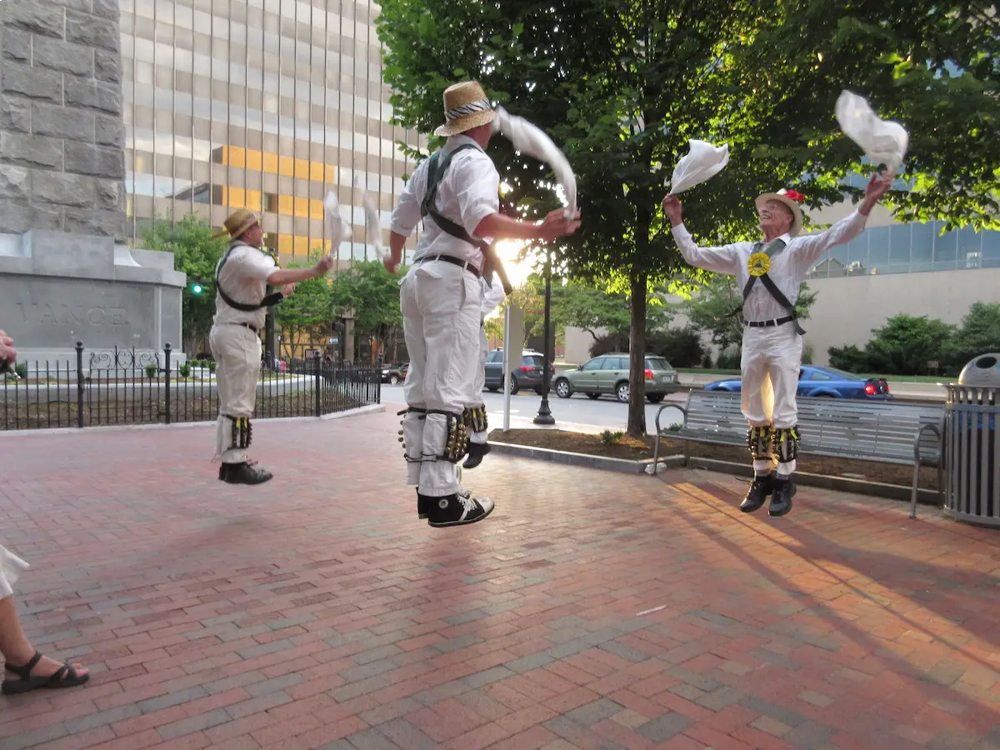
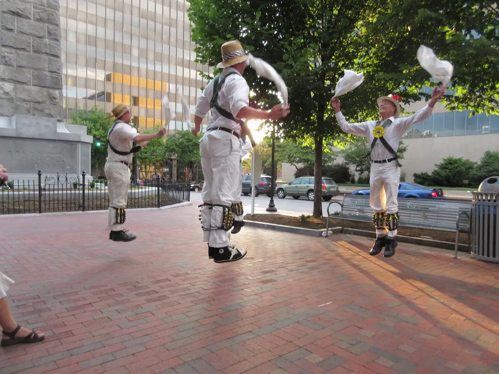
 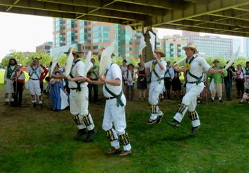
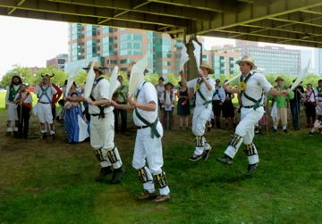

 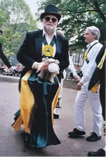
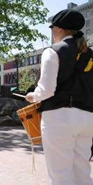
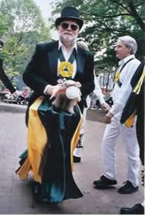
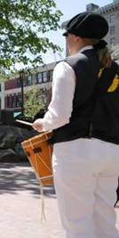

 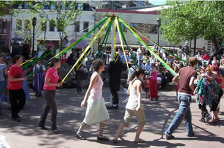
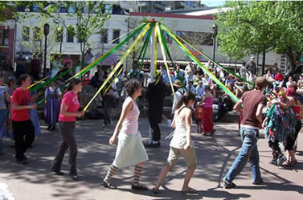


 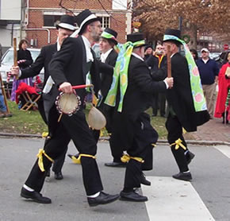
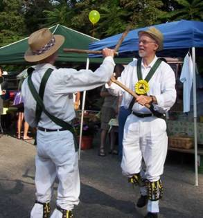
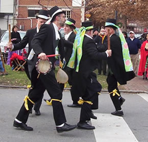
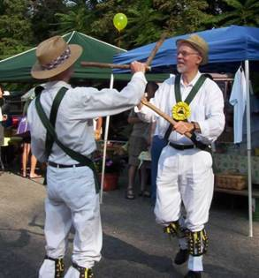